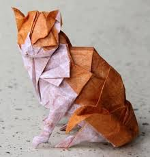

Главная
Об оригами
Орига́ми (яп. 折り紙, букв.: «сложенная бумага») — вид декоративно-прикладного искусства; древнее
искусство складывания фигурок из бумаги.
Искусство оригами своими корнями уходит в Древний Китай, где и была изобретена бумага. Первоначально
оригами использовалось в религиозных обрядах. Долгое время этот вид искусства был доступен только представителям
высших сословий, где признаком хорошего тона было владение техникой складывания из бумаги. Классическое
оригами складывается из квадратного листа бумаги.
Существует множество версий происхождения оригами. Одно можно сказать наверняка — по большей части это искусство развивалось в Японии. Оригами стало значительной частью японских церемоний уже к началу периода Хэйан. Самураи обменивались подарками, украшенными носи, своего рода символами удачи, сложенными из бумажных лент. Сложенные из бумаги бабочки использовались во время празднования свадеб синто и представляли жениха и невесту.
Однако, независимые традиции складывания из бумаги, хоть и не столь развитые, как в Японии, существовали среди прочего в Китае, Корее, Германии и Испании. Европейские традиции складывания из бумаги менее документированы, чем восточные, однако известно, что технология изготовления бумаги достигла арабов около VIII века н. э., мавры принесли бумагу в Испанию около XI века. С этого времени в Испании и с XV века в Германии начало развиваться складывание бумаги. Как и в Японии, в Европе складывание из бумаги тоже было частью церемоний. Обычай складывать особым образом свидетельства о крещении был популярен в центральной Европе в XVII-XVIII вв. К XVII веку в Европе существовал целый ряд традиционных моделей: Испанская Пахарита, шляпы, лодки и домики. В начале XIX века Фридрих Фрёбель сделал огромный вклад в развитие складывания из бумаги, предложив это занятие в качестве обучающего в детских садах для развития детской моторики.
В 1960-х с введением в обиход системы условных обозначений Ёсидзавы-Рандлетта искусство оригами стало распространяться по всему миру. Примерно в те же годы получило распространение модульное оригами. В настоящий момент оригами превратилось по-настоящему в международное искусство.
О нас
Цель этого сайта доступтно объеснить, показать и научить оригами, показать что это может быть весело и интересно, собрать весь доступтный материал по оригами, и предоставить вам для изучения. Так же собрать галерею прекрасных творческих работ наших посетителей.